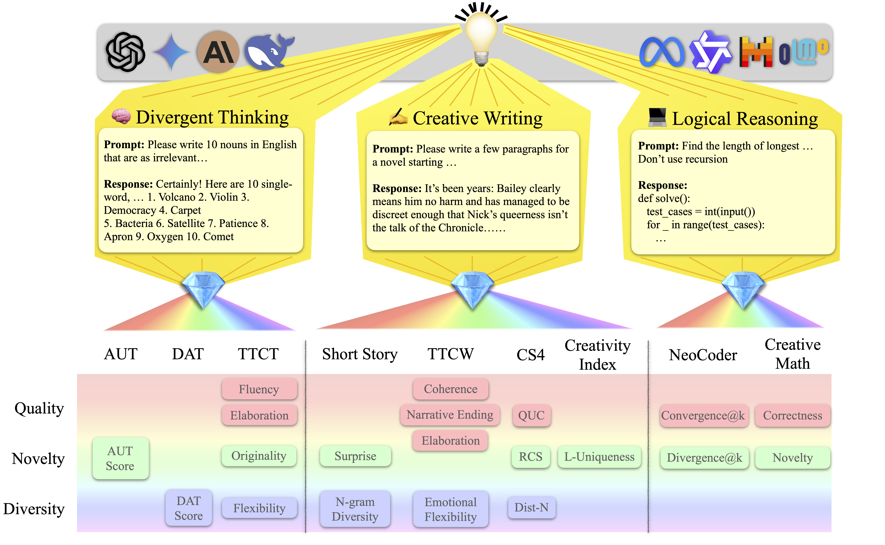
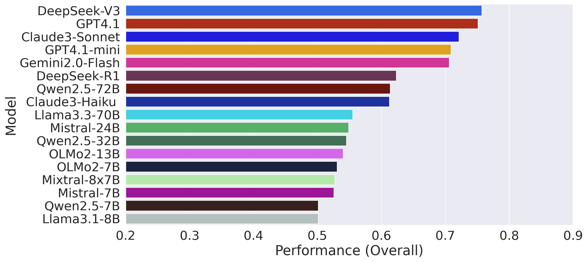
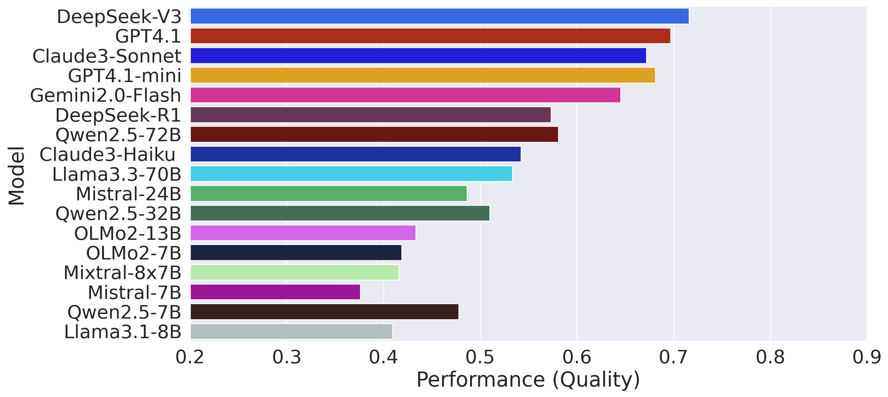
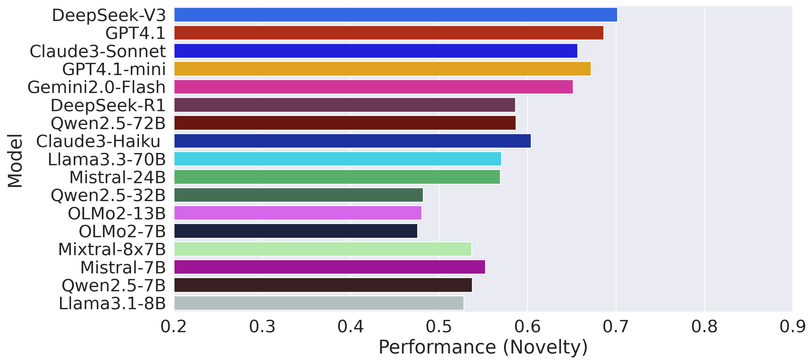
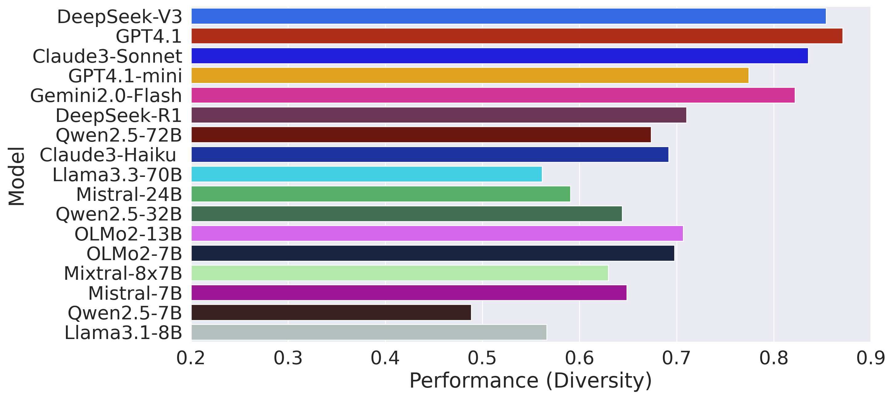
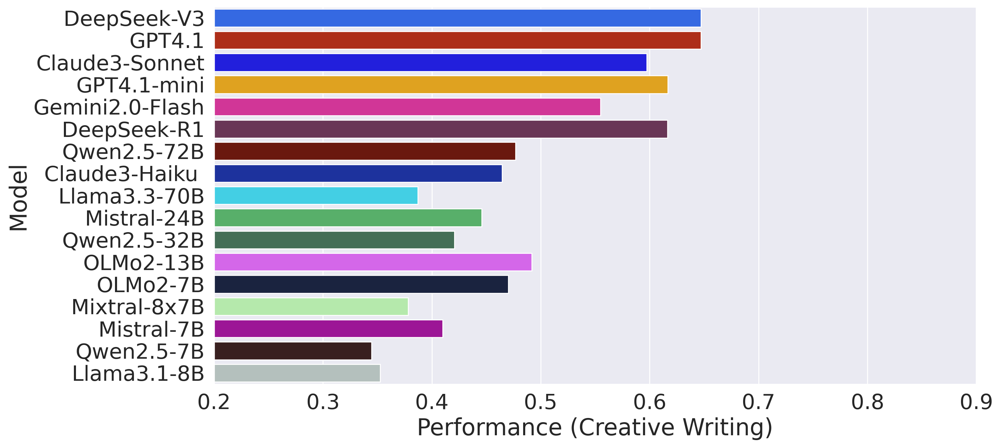
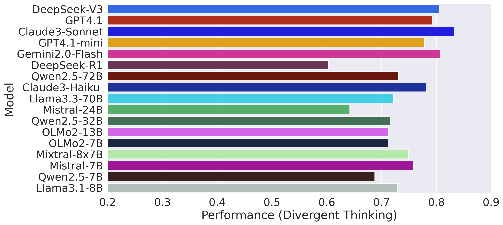
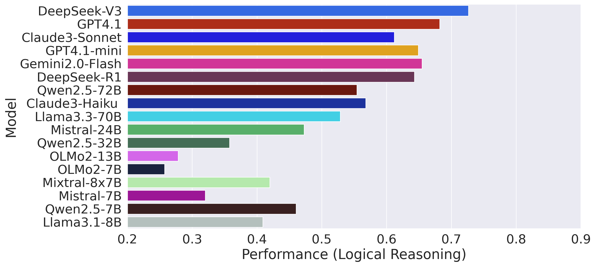

CreativityPrism
A benchmark for creative reasoning in LLMs — Quality · Novelty · Diversity
What is CreativityPrism?¶
Inspired by the hypothesis that creativity is not one fixed idea, we propose, CreativityPrism, an evaluation analysis framework that decomposes creativity into three dimensions: quality, novelty, and diversity. CreativityPrism incorporates nine tasks and twenty evaluation metrics, which measure each dimension in task-specific, unique ways. We evaluate 17 state-of-the-art (SoTA) proprietary and open-sourced LLMs on CreativityPrism and analyze the performance correlations among different metrics and the effect of post-training on the model's level of creativity. Our results reveal a notable gap between proprietary and open-sourced models, especially in logical reasoning tasks and creative writing tasks, and also in diversity and quality dimensions. We find that models' performances in the same domain are highly correlated with each other. We also observe a similar correlation in diversity and quality metrics, whereas those in novelty metrics are showing mixed correlation signals. We believe this sheds light on the complex nature of the definition and measurement of novelty.
Overview

Leaderboard
| Model | Overall | Quality | Novelty | Diversity | Creative Writing | Divergent Thinking | Logical Reasoning |
|---|
Overall Results

Detailed Results¶





